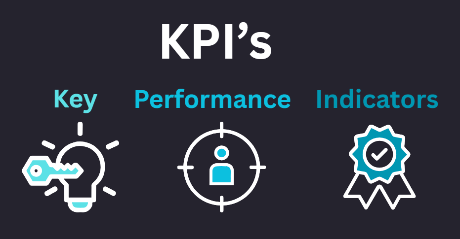

Key Performance Indicators (KPIs)- מדדי ביצוע עיקריים. הם מדדים שעל פיהם ניתן לאמוד את רמת הביצועים של מוצר או תהליך.
KPIsהוא המדריך שלנו למעקב אחר התקדמות הפיתוח של המוצר או שיפור התהליך.
כאשר עובדים על פיתוח מוצר חדש או שיפור תהליך, האינדיקציה לעד כמה אתה מצליח יכולה לעשות את כל ההבדל. כאן נכנסים לתמונה מדדי ביצוע עיקריים KPIs.
KPIs הם כלים חיוניים למדידת הצלחה ולהנחות את המאמצים שלך לעבר השגת המטרות.
החשיבות של KPIs בפיתוח מוצר ושיפור תהליך
- מעקב אחר התקדמות- KPIs עוזרים לעקוב אחר הביצועים של מוצר או תהליך ומספקים תמונה ברורה של המצב הנוכחי של המוצר בכל שלב של פיתוח.
- זיהוי בעיות בשלב מוקדם- על ידי מעקב אחרי KPIs, ניתן לזהות בעיות לפני שהן הופכות למשמעותיות. זיהוי מוקדם מאפשר התמודדות עם אתגרים במהירות וביצוע התאמות למוצר לפי הצורך האסטרטגי שלנו.
- קבלת החלטות מבוססת נתונים- KPIs מספקים נתונים חשובים שיכולים להנחות את תהליך קבלת ההחלטות בנוגע לעיצוב, התאמות בתהליך, הקצאת משאבים ועוד.
- הנעת מוטיבציה בצוות- KPIs ברורים עוזרים לצוות להבין כיצד הצלחה נראית ואיך המאמצים שלהם תורמים למטרות הכוללות. הבהירות הזו יכולה להגדיל את המוטיבציה והריכוז, מה שמוביל לתוצאות טובות יותר.
איך לבחור KPIs אפקטיביים?
- התאמה למטרות- ודאו שה- KPIs מקושרים ישירות למטרות של הפרויקט או התהליך.
- תהיו ספציפיים וכמותיים- זה מקל על המעקב אחר ההתקדמות ועל הערכה מדויקת של ביצועים.
- קביעת מטרות ריאליות- בחרו KPIs שיהיו מאתגרים אך ניתנים להשגה. מטרות לא ריאליות עלולות להוביל לתסכול, בעוד שמטרות ניתנות להשגה שומרות על המעורבות והריכוז של הצוות.
- סקירה חוזרת- בדקו את הKPIs באופן קבוע. בדיקות תדירות מסייעות לביצוע התאמות לפי הצורך ולשמירה של הפרויקט או התהליך על המסלול הנכון.
דוגמאות ל-KPIs לפיתוח מוצר ושיפור תהליך
- זמן להשקה : הזמן הנדרש מהקונספט ועד ההשקה.
- ציון משוב לקוחות : עוקב אחרי שביעות הרצון של המשתמשים ותחומים לשיפור.
- מספר באגים : עוקב אחרי מספר הבעיות שמתגלות במהלך הבדיקות.
מדדי ביצוע מרכזיים (KPIs) הם כלים בלתי נפרדים בפיתוח מוצר או שיפור תהליך. הם מספקים תמונה ברורה של ההתקדמות, עוזרים לזהות בעיות מוקדם, מנחים את קבלת ההחלטות ומניעים את הצוות. על ידי קביעת KPIs ברורים וניתנים לפעולה, ניתן להבטיח שהפרויקט או התהליך יישארו על המסלול וישיגו את מטרותיהם.
בין אם ברצונכם להשיק מוצר חדש או לשפר תהליכים אצלכם בארגון - עם KPIs מתאימים, תוכלו לנווט באתגרים, לקבל החלטות מושכלות ולבסוף להנחות את הפרויקט או התהליך שלכם לעבר הצלחה.